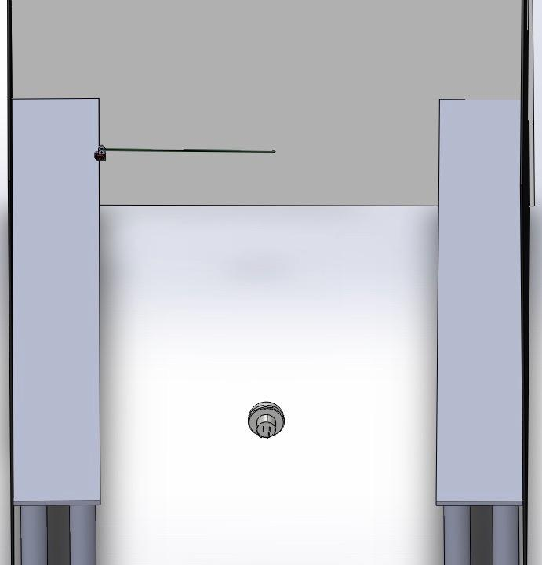
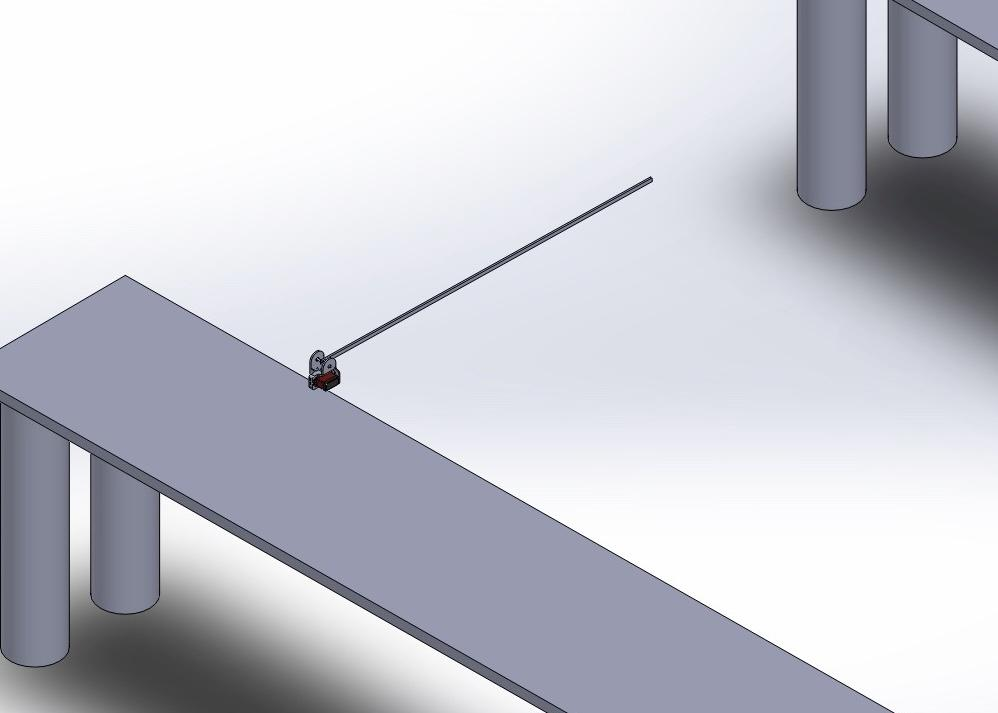
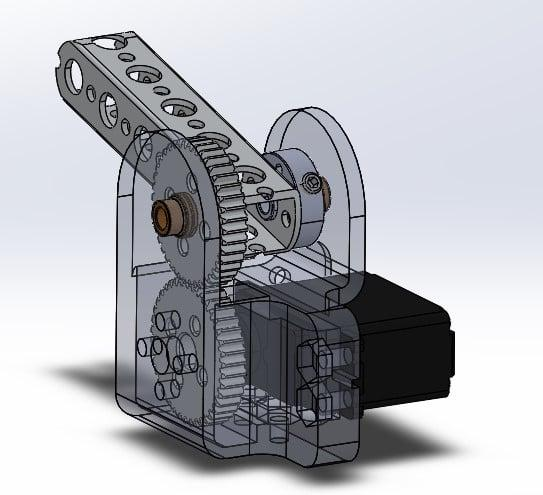
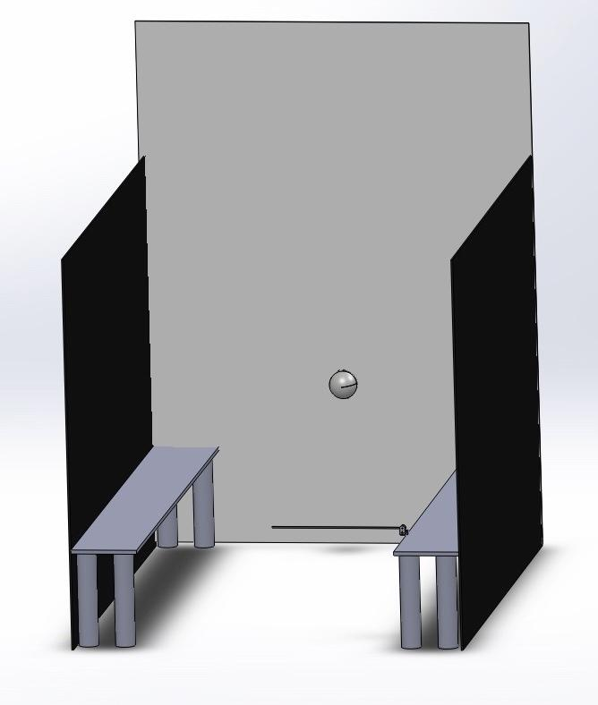
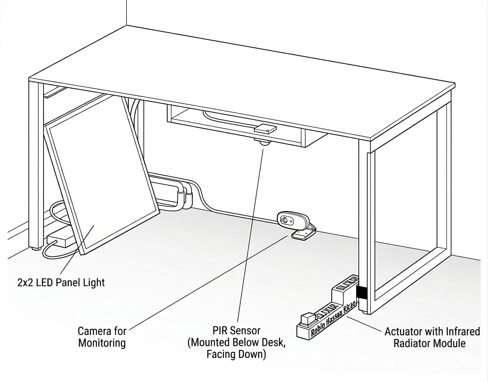
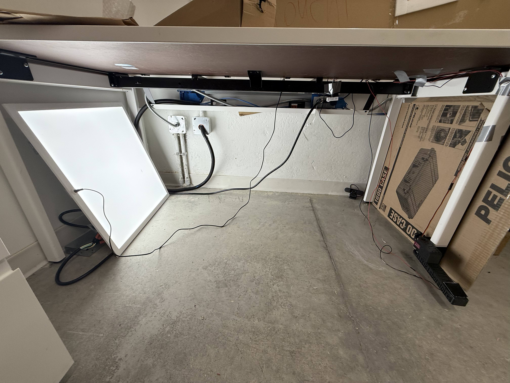
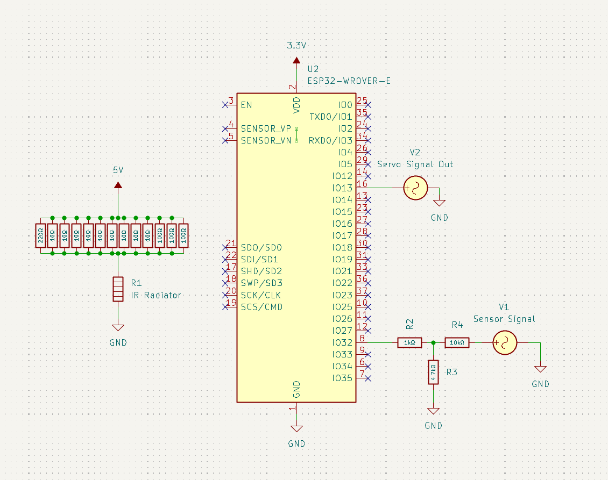
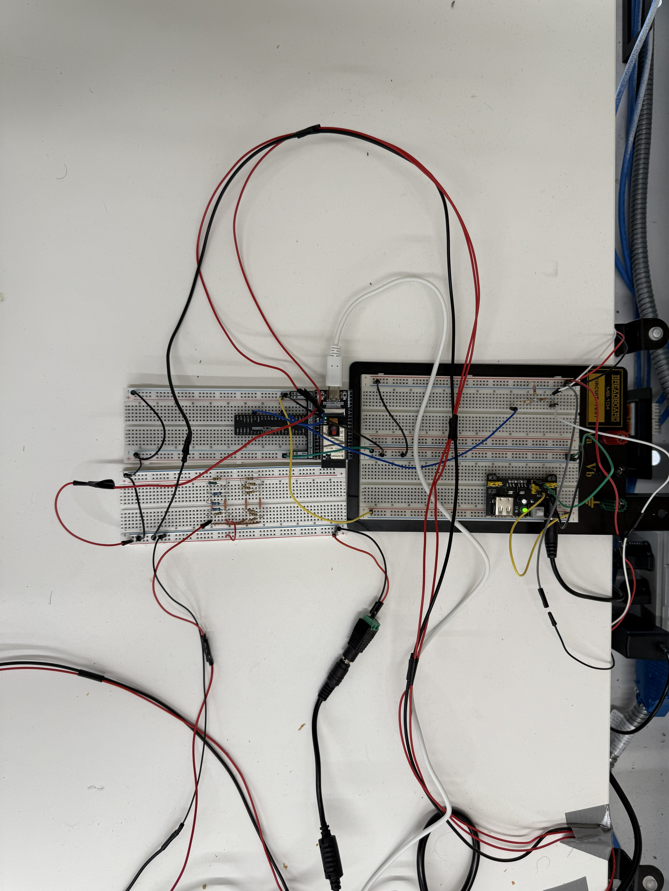
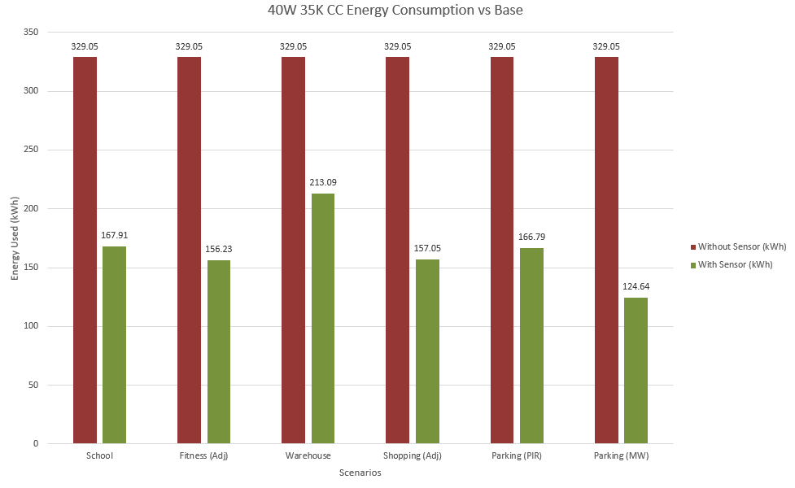

INDUSTRY VALIDATION • EMBEDDED SYSTEMS • AUTOMATION
EcoBright Motion-Sensing LED Validation Platform
A controlled laboratory validation platform developed to evaluate occupancy-sensing LED behavior through repeatable motion simulation, embedded data acquisition, fixture-response tracking and energy-savings analysis.
PROJECT SNAPSHOT
What this project involved
ENGINEERING OBJECTIVE
Making occupancy validation repeatable
The project evaluated whether EcoBright’s motion-sensing LED system could reduce unnecessary lighting energy use while following intended dimming and timeout behavior.
A key challenge was replacing inconsistent human movement with a repeatable physical stimulus. A servo-driven actuator moved a heated anodized-black aluminum target through the sensor field of view, producing physical motion and thermal changes suitable for PIR validation.
My Contributions
- Contributed to the physical test-bench design and implementation.
- Worked on ESP32-based control and instrumentation.
- Supported repeatable occupancy simulation for PIR and microwave sensing.
- Helped structure scenario-based testing and data logging.
- Contributed to energy analysis and final technical documentation.
SYSTEM ARCHITECTURE
Validation workflow
DESIGN EVOLUTION
From CAD concept to physical test bench

Proposal-stage geometry for the sensor, tables and moving stimulus beam.

Detailed servo-driven mechanism used to generate sweeping motion through the sensing region.

Early view of the rotating beam used to create repeatable simulated occupancy events.

Sensor-perspective visualization used to reason about target entry into the detection region.
PHYSICAL SETUP
Controlled laboratory environment
The final system was built beneath a table-based enclosure. The sensor was mounted downward to approximate a ceiling-mounted installation, while the fixture, actuator and monitoring equipment remained fixed to preserve geometry between tests.

Schematic showing sensor location, LED panel and actuator-based thermal stimulus.

Actual laboratory implementation of the validation setup.
ELECTRICAL & EMBEDDED SYSTEM
ESP32 control and signal monitoring
The low-voltage system used an ESP32 WROVER-E, servo control, sensor signal monitoring through a voltage divider, a shared ground strategy and a calibrated reference for fixture dimming-state tracking.

ESP32, servo path, sensor signal interface and support circuitry.

Bench-level implementation of the embedded control electronics.
TEST METHODOLOGY
Five commercial occupancy profiles
School
Lower classroom activity separated by higher-activity class-change periods.
Fitness Centre
Frequent activity with decompressed day-cycle modeling.
Warehouse
Semi-constant movement used as a conservative high-activity case.
Shopping Centre
Frequent traffic with adjusted day-cycle modeling.
Parking Garage
Low-frequency movement tested with both PIR and microwave configurations.
Data Capture
Continuous 1 Hz logging with Python timestamping and CSV storage.
RESULTS
Validated control behavior and modeled savings
Across the tested commercial scenarios, modeled energy savings ranged from 35.24% to 62.12% relative to an always-on baseline.
35.24–62.12%
Scenario-dependent modeled energy-savings range.
1 Hz
Continuous hardware-event logging during tests.
1,000 Fixtures
Commercial scaling used for facility-level projections.

Example yearly modeled energy comparison for the occupancy-controlled fixture versus the always-on baseline.
Engineering Takeaway
The same physical test platform could be reused across multiple occupancy profiles, allowing the sensing and dimming logic to be evaluated under consistent geometry while changing only the simulated traffic behavior.
DOCUMENTATION
Technical reporting
Initial Research Proposal
Defined the validation objective, scenario structure, concept CAD and measurement plan.
Stakeholder Validation Report
Captured the completed setup, methodology, results and commercial projections.
Selected Public Content
The complete final report is not reproduced publicly. This page presents selected engineering content for portfolio use.